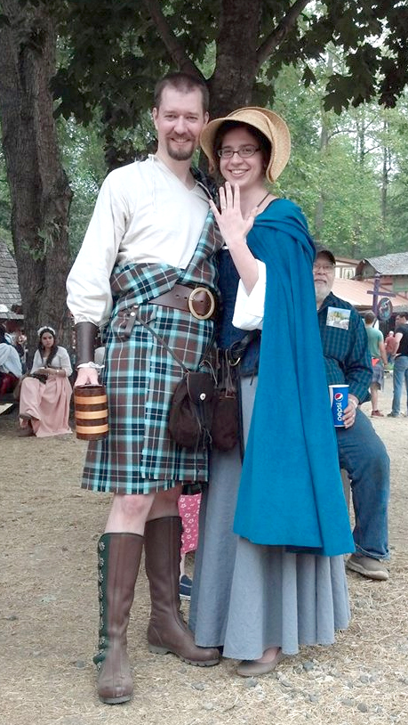

About Us
We actually decided to get married back in August - there was no proposal, just a conversation about life and what we wanted. It was very important to Greg that we get a ring before it became 'official' and I really wanted to get that ring from renn fest (kinda shot myself in the foot with that one, since its been WEEKS that I had to keep quiet about it.) (SO MANY WEEKS). (So many fabric swatches) Anyhow, we fiinnnaaaaallly made it to the festival yesterday and started scouring the jewelry stores - there was one in particular I was looking for that made hammered jewelry I really liked and thought I'd get a ring of the same sort. It took a phone call and some serious map reading (renn fest has wonky maps) but we found it -- and they had no rings. none.
I was horribly disappointed, but we had a stunt ring at home (my great grandmother's - Mom was just as anxious for a public announcement) for just this eventuality. Grumbling to myself, we wandered into the kilt shop for something Greg wanted, and across the path there was one more jewelry store. Probably the only one left at the faire, and there in the counter was a swirly ring. Not what I'd been planning, but it fit my goal of flat, no stone, gold and interesting - and I loved it, they had two left, and one was in my size. (Now follows some mad scurrying over the grounds to the drag Greg out of the kilt shop, which took forever, but in the end, we got the ring.) (I swear he was moving slowly intentionally)
The end of the story: I'm very very happy, love the ring, love Greg and had a lovely day.